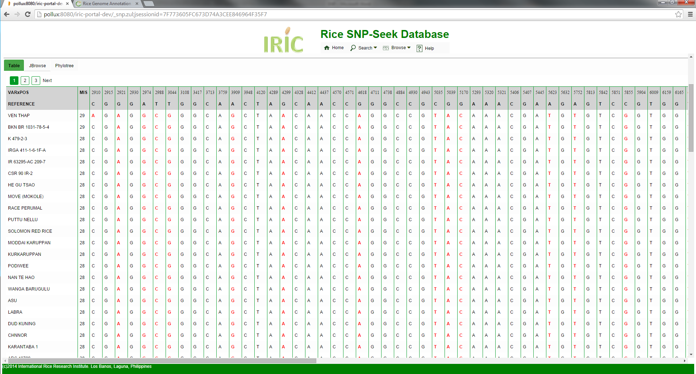
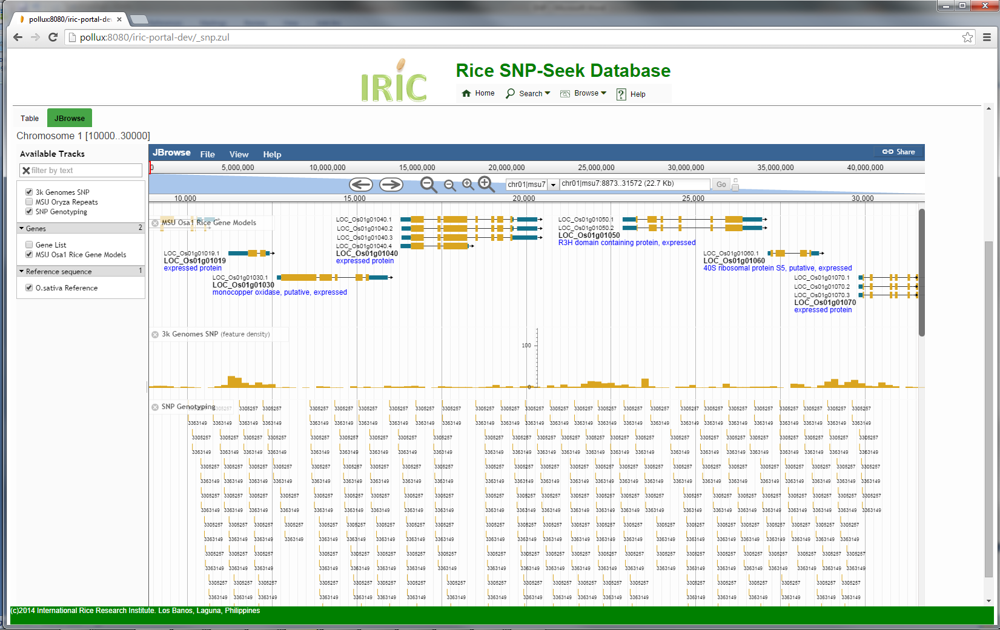

The SNP Query interface has two functionalities, to compare alleles between two specified varieties, and to compare all varieties with the reference genome. In both cases the query region can be specified either by chromosomal position, or by gene locus.
Three views are available for SNP query results
Table - this view displays the Alleles for each variety in a row, for all SNP positions within the specified region or gene. The color is based on SNP coloring selected. The table is displayed in several pages, depending on the number of returned varieties. Note that only varieties having at least one reference mismatch are returned, and the varieties are sorted by decreasing number of allele mismatches. Due to its typlical large size, the result is displayed in several pages and the number of varieties per page depends on the length of the query region.

JBrowse – the JBrowse genome browser lays out the SNP genotyping result in the SNP Genotyping track. Each variety is represented as a thin row in the track, and sorted in the same order as in the table. This track is dynamically generated from the query result, and covers only the queried region or locus. Zooming out from the initial region gives empty rows at both sides. To view a wider region, do a query again specifying the new wider region. Unlike in the Table view where results are displayed in several pages, Jbrowse displays all varieties having allele mismatch in the queried region at once.

PhyloTree -- Using the number of allele mismatches between varieties within the queried region or gene to compute for distance, the phylogenetic tree is constructed by Neighbor-Joining alorithm. Note that this operation takes some time (~3 minutes for a typical gene length).
For two varieties query, results can be viewed in a table or in JBrowse.
Table - when two varieties are compared, the result is a list of SNP position within the specified region. The allele of the reference, and the two varieties for each position are displayed in a row. Polymorphism between the two varieties is highlighted with color red.

JBrowse – the JBrowse tab displays the SNPs of the two varieties within the genome, along with the genes. The boxes are colored based on the selected SNP coloring option.

Gene Locus Naming
Except for Nipponbare, the four new rice genomes haven't assigned gene locus names yet. The available GFF files for gene annotations still use the gene annotation pipelines' default (like FGENESH, Maker-P). To integrate all these genomes into IRIC, it is therefore necessary that we assign them locus names for uniformity and easy recall. And we propose this scheme:
1. Gene name starts with Os. Os stands for Oryza sativa.
2. Next 5 characters define the variety:
Nippo -- Nipponbare
9311_ -- 9311
Kasal -- Kasalath
DJ12_ -- DJ123
IR64_ -- IR64
3. If there is a chromosome assembly, the next 2 digits are the chromosome number.
If there is no chromosome assembly, then the next 5 digits are the contig number. A contig number is a rank of the contigs sorted by length. The longest contig has number 1. If contigs are of the same length, they are sorted by their sequence in alphabetical order.
4. The next character is g. g stands for genomic. Instead of g can be m for mitochondrial DNA or c for chloroplast DNA.
5. The next 6 digits are the gene number in the sequence with increment of 50. The first gene should have number 010050, the second 010100, the third 010150, etc.
Gene names in the chromosomes will be preserved in future versions of annotations. Gene names in scaffolds are for temporary use.
6. Alternatively spliced gene models or different versions of the same gene prediction are distinguished by a number added at the end of the gene after the dot.
Here are some examples: OsNippo01g210150.1, OsIR64_00342g210150.1, Os9311_11g210150.1, OsDJ12_00342g210150.1
We also propose to combine the MSU7 and RAP gene annotations for Nipponbare, and rename the combined gene loci following the scheme above.
Created with the Personal Edition of HelpNDoc: Free help authoring environment